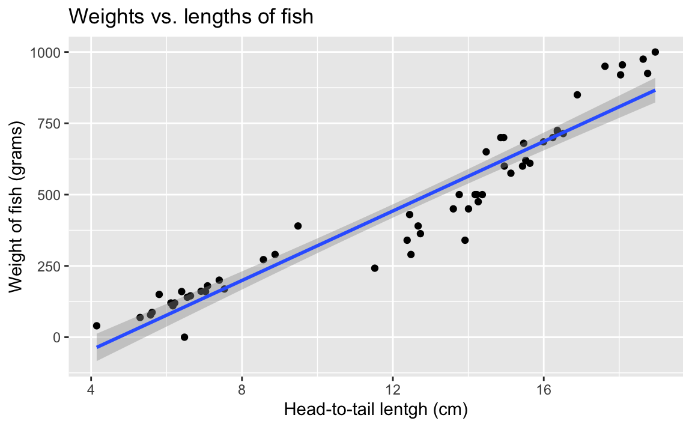
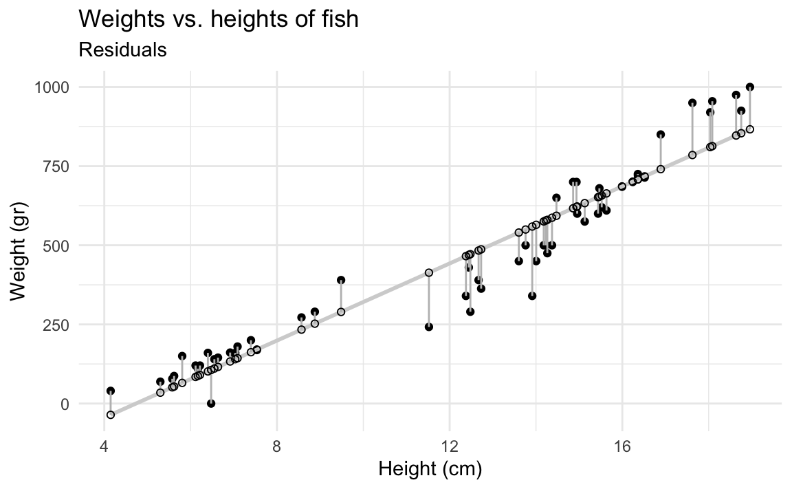
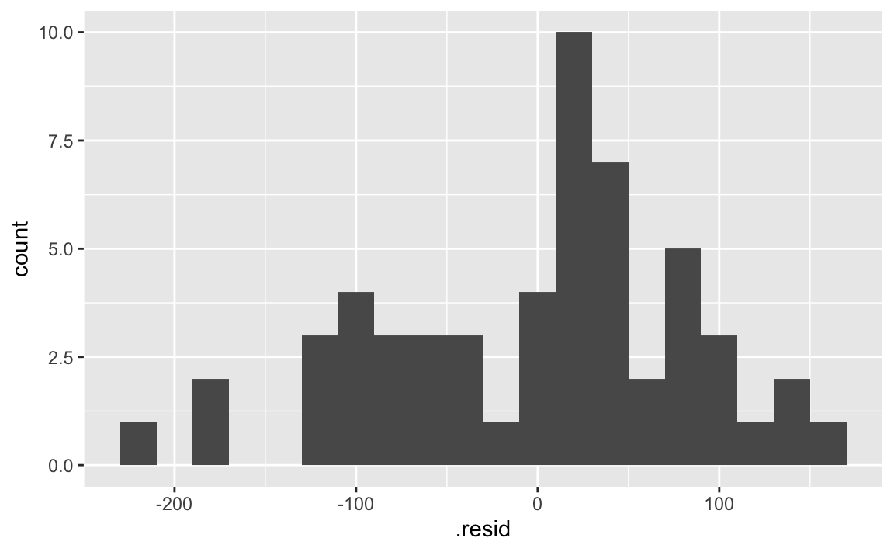
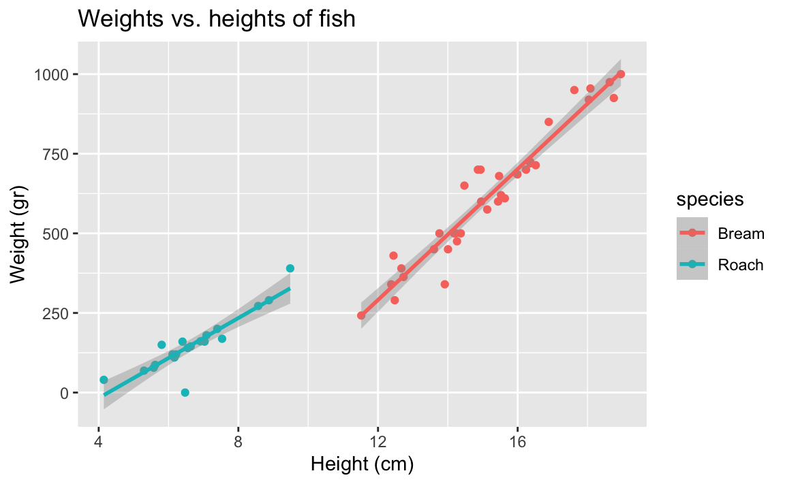
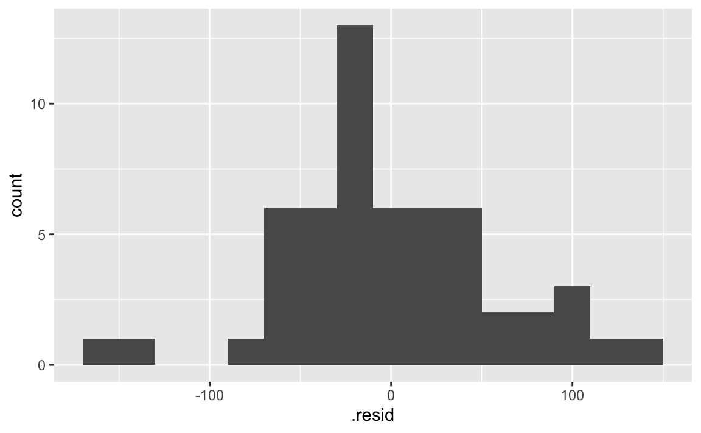
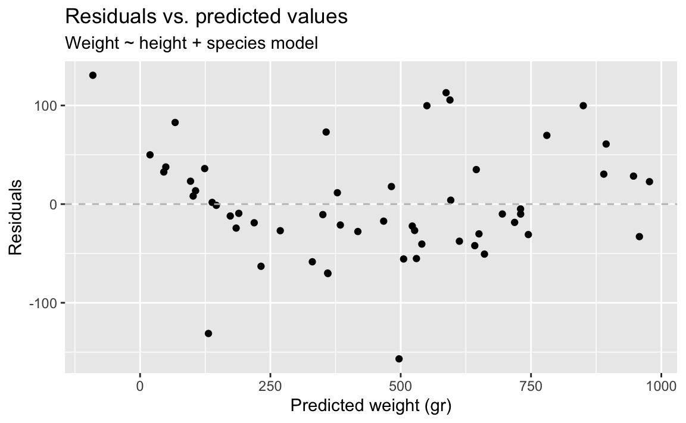
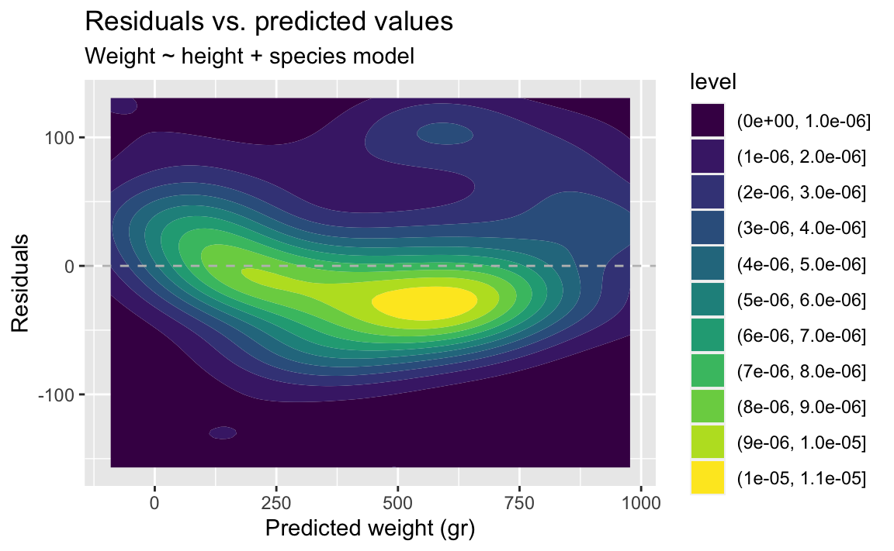

library(tidyverse)
library(tidymodels)
fish <- read_csv("data/fish.csv")Modelling fish weights
Application exercise
Sugested answers
For this application exercise, we will work with data on fish. The dataset we will use, called fish, is on two common fish species in fish market sales. We’re going to investigate the relationship between the weights and heights of fish, and later take into consider species as well.
The data dictionary is below:
| variable | description |
|---|---|
species |
Species name of fish |
weight |
Weight, in grams |
length_vertical |
Vertical length, in cm |
length_diagonal |
Diagonal length, in cm |
length_cross |
Cross length, in cm |
height |
Height, in cm |
width |
Diagonal width, in cm |
Visualizing the relationship
We’re going to investigate the relationship between the weights and heights of fish.
- Demo: Create an appropriate plot to investigate this relationship. Add appropriate labels to the plot.
ggplot(fish, aes(x = height, y = weight)) +
geom_point() +
labs(
title = "Weights vs. heights of fish",
x = "Height (cm)",
y = "Weight (gr)"
)Correlation
- What is correlation? What are values correlation can take?
Strength and direction of a linear relationship. It’s bounded by -1 and 1.
- Demo: What is the correlation between heights and weights of fish?
fish |>
summarize(r = cor(height, weight))# A tibble: 1 × 1
r
<dbl>
1 0.954Visualizing the model
- Your turn: Overlay the line of best fit on your scatterplot.
ggplot(fish, aes(x = height, y = weight)) +
geom_point() +
geom_smooth(method = "lm") +
labs(
title = "Weights vs. lengths of fish",
x = "Head-to-tail lentgh (cm)",
y = "Weight of fish (grams)"
)`geom_smooth()` using formula = 'y ~ x'
- What types of questions can this plot help answer?
What is the relationship between fish heights and weights of fish?
Model fitting
- Demo: Fit a linear model to predict fish weights from their heights.
fish_hw_fit <- linear_reg() |>
fit(weight ~ height, data = fish)
fish_hw_fitparsnip model object
Call:
stats::lm(formula = weight ~ height, data = data)
Coefficients:
(Intercept) height
-288.42 60.92 Model summary
- Demo: Display the model summary including estimates for the slope and intercept along with measurements of uncertainty around them. Show how you can extract the values of slope and intercept from the model output.
fish_hw_tidy <- tidy(fish_hw_fit)
fish_hw_tidy# A tibble: 2 × 5
term estimate std.error statistic p.value
<chr> <dbl> <dbl> <dbl> <dbl>
1 (Intercept) -288. 34.0 -8.49 1.83e-11
2 height 60.9 2.64 23.1 2.40e-29# intercept
fish_hw_tidy |>
filter(term == "(Intercept)") |>
pull(estimate)[1] -288.4152# slope
fish_hw_tidy |>
filter(term == "height") |>
pull(estimate)[1] 60.91587- Demo: Write out your model using mathematical notation.
\(\widehat{weight} = 1.96 + 0.233 \times height\)
- Demo: Interpret the slope and the intercept.
Intercept: The model predicts that fish who are 0 cm in height weigh roughly -288 grams. This doesn’t make sense in context of the data.
Slope: For each centimeter the fish are taller, we expect the weights of fish to be height, on average, by 61 grams.
Prediction
- We can use this line to make predictions. Predict what you think the weight of a fish would be with a height of 10 cm, 15 cm, and 20 cm. Which prediction is considered extrapolation?
At 10 cm, we estimate a weight of 375 grams. At 15 cm, we estimate a weight of 600 grams At 20 cm, we estimate a weight of 975 grams. 20 cm would be considered extrapolation.
- Your turn: Predict what the weight of a fish would be with a height of 10 cm, 15 cm, and 20 cm using the model equation.
x <- c(10, 15, 20)
-288 + 60.92 * x[1] 321.2 625.8 930.4- Demo: Predict what the weight of a fish would be with a height of 10 cm, 15 cm, and 20 cm using the
predict()function.
new_fish <- tibble(
height = c(10, 15, 20)
)
predict(fish_hw_fit, new_fish)# A tibble: 3 × 1
.pred
<dbl>
1 321.
2 625.
3 930.Residuals
- What is a residual?
Difference between predicted and observed.
- Demo: Calculate predicted weights for all fish in the data and visualize the residuals under this model.
fish_hw_aug <- augment(fish_hw_fit, new_data = fish)
ggplot(fish_hw_aug, aes(x = height, y = weight)) +
geom_point() +
geom_smooth(method = "lm", se = FALSE, color = "lightgrey") +
geom_segment(aes(xend = height, yend = .pred), color = "gray") +
geom_point(aes(y = .pred), shape = "circle open") +
theme_minimal() +
labs(
title = "Weights vs. heights of fish",
subtitle = "Residuals",
x = "Height (cm)",
y = "Weight (gr)"
)`geom_smooth()` using formula = 'y ~ x'
- Demo: If the model was a perfect fit, what would the value of the residuals be? Make a histogram of the residuals. Does it appear that the model is a good fit?
The residuals don’t seem to be centered at 0, but it’s hard to tell.
ggplot(fish_hw_aug, aes(x = .resid)) +
geom_histogram(binwidth = 20)
- Demo: Suppose you make a scatterplot of residuals vs. the predicted values. If the model is a good fit, what, if any, patterns would you expect to see in this plot? Now, make the plot. Does the model appear to be a good fit?
The residuals should be randomly scattered around 0. There should be no patterns. However we do see some patterns here, there seems to be two groups of data, suggesting that the model is not a good fit.
ggplot(fish_hw_aug, aes(x = .pred, y = .resid)) +
geom_point() +
geom_hline(yintercept = 0, linetype = "dashed", color = "gray") +
labs(
title = "Residuals vs. predicted values",
subtitle = "Residuals",
x = "Predicted weight (gr)"
)- Demo: Make the same plot, but this time using a 2D density as the geom. What does this plot tell you about the data?
The contour plot makes it even more obvious that there are two groups of data.
ggplot(fish_hw_aug, aes(x = .pred, y = .resid)) +
geom_density_2d_filled() +
geom_hline(yintercept = 0, linetype = "dashed", color = "gray") +
labs(
title = "Residuals vs. predicted values",
subtitle = "Residuals",
x = "Predicted weight (gr)"
)Adding a second predictor
- Demo: Does the apparent relationship between heights and weights of fish change if we take into consideration species? Plot two separate straight lines for the Bream and Roach species.
ggplot(
fish,
aes(x = height, y = weight, color = species)) +
geom_point() +
geom_smooth(method = "lm") +
labs(
title = "Weights vs. heights of fish",
x = "Height (cm)",
y = "Weight (gr)"
)`geom_smooth()` using formula = 'y ~ x'
- Demo: Fit the model with height and species as predictors and then plot the residuals vs. predicted values as well as a histogram of residuals for this model. Comment on the fit of the model compared to the previous one.
There isn’t grouping left in the residuals.
fish_hws_fit <- linear_reg() |>
fit(weight ~ height + species, data = fish)
fish_hws_aug <- augment(fish_hws_fit, new_data = fish)
ggplot(fish_hws_aug, aes(x = .resid)) +
geom_histogram(binwidth = 20)
ggplot(fish_hws_aug, aes(x = .pred, y = .resid)) +
geom_point() +
geom_hline(yintercept = 0, linetype = "dashed", color = "gray") +
labs(
title = "Residuals vs. predicted values",
subtitle = "Weight ~ height + species model",
y = "Residuals",
x = "Predicted weight (gr)"
)
ggplot(fish_hws_aug, aes(x = .pred, y = .resid)) +
geom_density_2d_filled() +
geom_hline(yintercept = 0, linetype = "dashed", color = "gray") +
labs(
title = "Residuals vs. predicted values",
subtitle = "Weight ~ height + species model",
y = "Residuals",
x = "Predicted weight (gr)"
)
Fitting other models
- Demo: Plot weights vs. heights of fish and visualize the fit of a “loess” model. What is different from the plot created before?
This model is non-linear.
ggplot(fish, aes(x = height, y = weight)) +
geom_point() +
geom_smooth(method = "lm") +
labs(
title = "Weights vs. heights of fish",
x = "Height (cm)",
y = "Weight (gr)"
)`geom_smooth()` using formula = 'y ~ x'